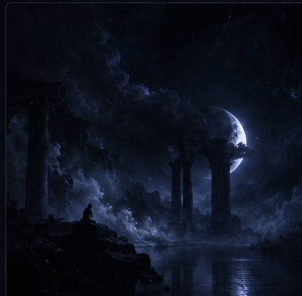

Музыка моего состояния

Погружаясь в грёзы
Moayad Aljabal
0:00—:—
25%
Иногда музыка становится тем местом,
где можно побыть собой.
Это — одно из таких мест.
СЛУШАЙ. ЧУВСТВУЙ. ПОГРУЖАЙСЯ.
Звук начнётся только после нажатия на кнопку.
Музыка моего состояния

Moayad Aljabal
Иногда музыка становится тем местом,
где можно побыть собой.
Это — одно из таких мест.
СЛУШАЙ. ЧУВСТВУЙ. ПОГРУЖАЙСЯ.
Звук начнётся только после нажатия на кнопку.